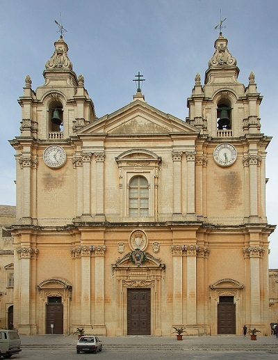

Katedra św. Pawła w Mdinie
Kościół św. Franciszka z Asyżu w Valletcie
Kościół św. Pawła Rozbitka
Bazylika Matki Bożej Bezpiecznej Przystani i św. Dominika w Valletcie
Konkatedra świętego Jana w Valletcie
Rzeźba św. Franciszka z Asyżu
Katedra Wniebowzięcia Najświętszej Maryi Panny w Victorii
Kościół Matki Bożej z Pilar w Valletcie
Kościół Najświętszej Marii Panny w Valletcie
Kościół św. Augustyna w Valletcie
Kościół św. Barbary w Valletcie
Katedra Świętego Pawła w Mdinie
Wieża Dwejra
Wieża Għallis
Wieża Hamrija
Wieża Madliena
Wieża St. Julians
Wieża św. Lukiana
Wieża św. Marka
Wieża św. Pawła
Wieża Qawra
Wieża św. Tomasza
Wieża Ta' Lippija
Wieża Wardija
Wieża Xlendi
Wieża Świętej Agaty
Armier Tower
Megalityczne świątynie Malty
Ġgantija
Ħaġar Qim
Mnajdra
Skorba
Ta' Ħaġrat
Tarxien
Zajazd Aragoński
Zajazd Kastylijski
Zajazd Prowansalski
Zajazd Włoski
Madliena Fougasse
Sacra Infermeria
Pałac San Anton
Pałac Verdala
Teatr Manoel
Akwedukt Wignacourta